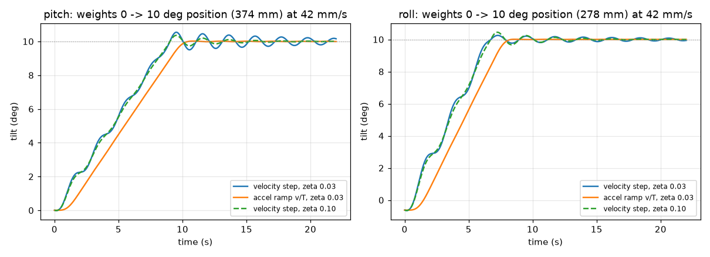
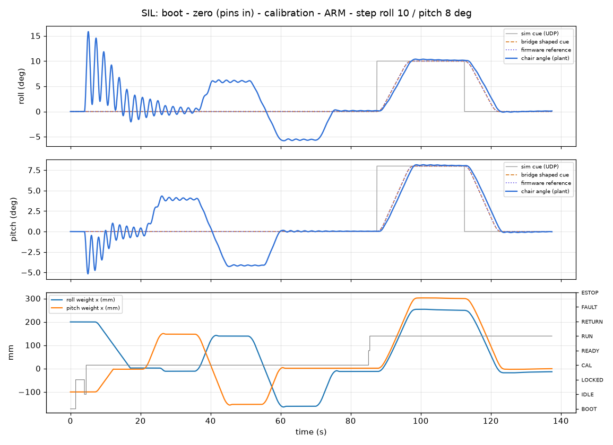
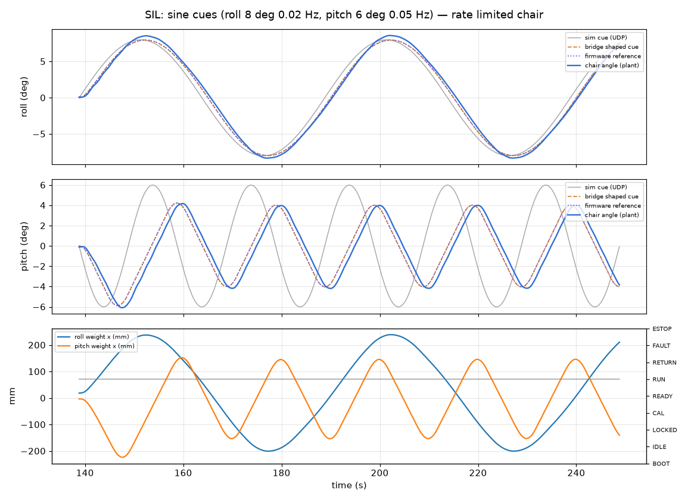
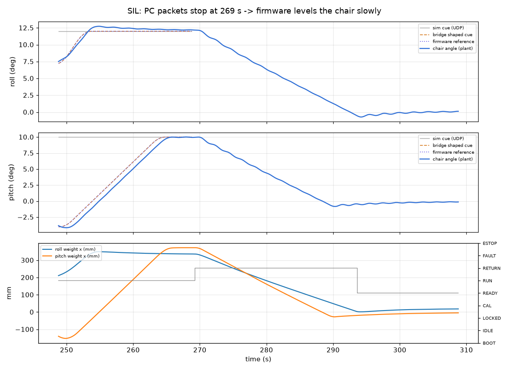
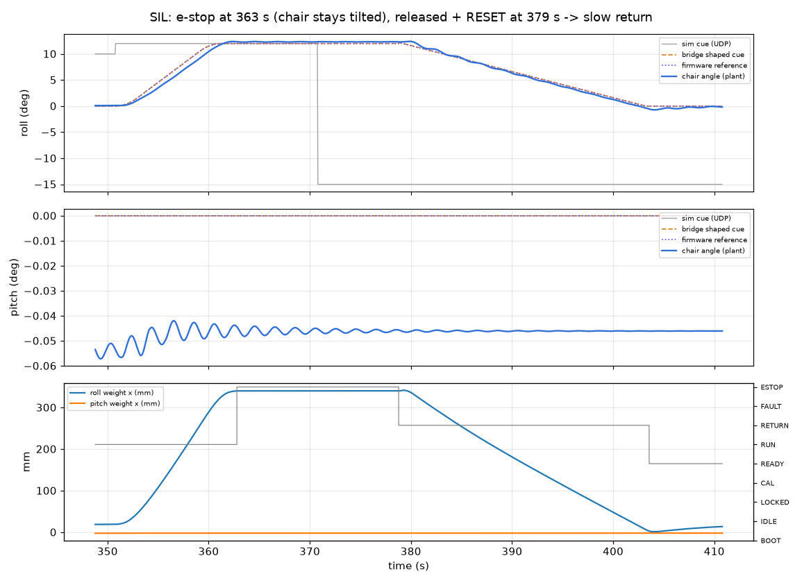
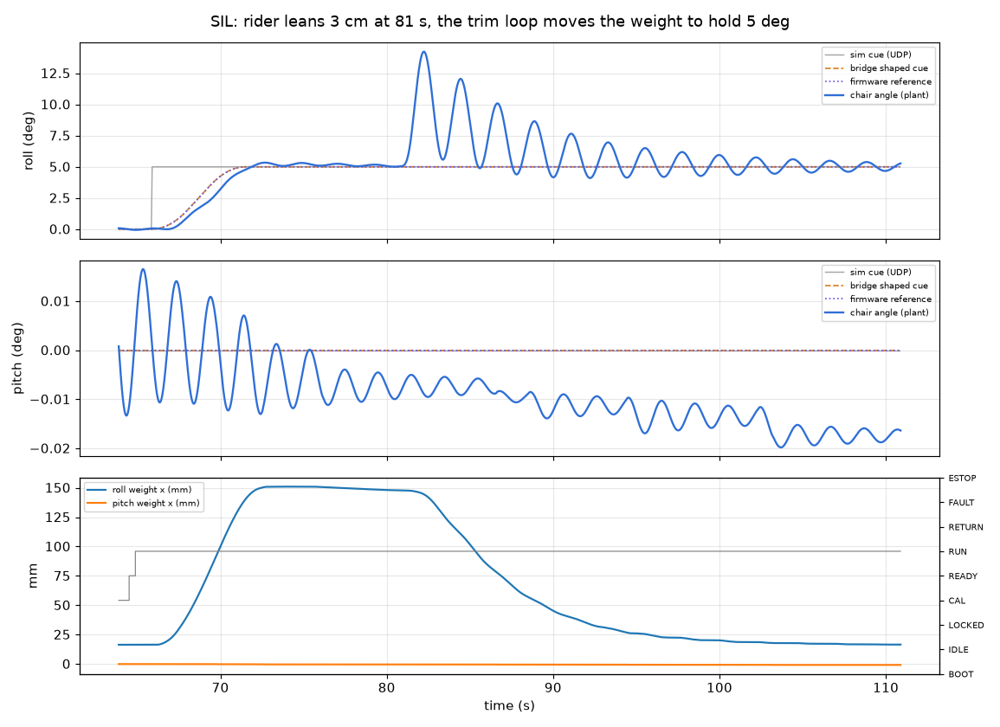

의자 제어 — 무게추 2축 의자를 움직이는 프로그램과 전자부
2026-11-05 밤샘 작업. 코드: control/ (PC), firmware/chair/ (의자 보드). 숫자는 모두 추정이고 실물로 재야 합니다 (아래 "확인 안 된 것").
- 이 의자는 느립니다. 모터 25 rpm × 풀리 100 mm = 무게추 초속 약 4.2 cm. 그래서 기울기 속도는 pitch 약 1.1 °/s, roll 약 1.6 °/s가 최대입니다 (추정). 지금 시뮬레이터(
sim/server.py)는 8 °/s 로 보내는데, 이건 5~7 배 빠릅니다 — 실현 불가. - 권장 값: 속도 pitch 0.95 · roll 1.3 °/s, 가속 0.48 · 0.6 °/s², 각도 한계 pitch ±14° · roll ±18°. PC 프로그램과 펌웨어에 이미 넣었습니다.
- 보드: ESP32 DevKitC + Cytron MDD10A 모터 드라이버 + LSM6DSOX 기울기 센서 + 무게추 위치 센서 AS5600 2개. 하드웨어 비상정지는 릴레이로 모터 전원을 직접 끊습니다 (프로그램과 무관).
- 컴퓨터 안 시험 (실제 펌웨어 코드 + 의자 물리 모델): 30 / 30 통과. 펌웨어 2개 모두 컴파일 성공. 실물에서는 아직 한 번도 안 돌려 봤습니다.
1. 의자가 낼 수 있는 움직임 (계산)
| pitch | roll | 근거 | |
|---|---|---|---|
| 움직이는 무게추 | 14.4 kg (양옆 합) | 18.6 kg | index.html 계산 |
| 되돌아오는 힘 M·d | 30.6 kg·m | 27.6 kg·m | index.html (80 kg, 무게중심 축 아래 10 cm) |
| 최대 각도 | ±15.8° | 오른쪽 21.4° / 왼쪽 20.3° | 무게추가 레일 끝일 때 |
| 0 → 10° 걸리는 시간 | 약 9 s | 약 6 s | 무게추 4.2 cm/s |
| 가운데 → 끝 (최대 각도까지) | 14 s | 14 s | |
| 출렁임 주기 | 2.0 s | 2.2 s | index.html 관성 + 탑승자 자체 관성 5 / 4 kg·m² (가정) |
| 무게추를 갑자기 출발·정지시키면 남는 출렁임 | 0.5° | 0.7° | 감쇠비 0.03 가정 (댐퍼 없음) |
| → 가속을 "속도 ÷ 주기"로 천천히 하면 | 0.02° | 0.02° | 펌웨어가 이렇게 함 (가속 약 20 mm/s²) |
| 모터 축에 필요한 토크 (31° 고무 멈춤쇠에서) | 12.6 kgf·cm | 16.3 kgf·cm | 20T 풀리, 마찰 0.03 가정 — 1/218 모터 정격 토크 확인 필요 |

파란 실선: 무게추가 갑자기 출발·정지 → 끝에서 출렁임. 주황: 가속을 천천히 → 거의 안 출렁임. 점선: 감쇠가 더 클 때.
탑승자에 따라 달라짐
| 탑승자 | 쉴 때 pitch | pitch 최대 (뒤로 / 앞으로) | roll 최대 | 속도 pitch / roll |
|---|---|---|---|---|
| 60 kg | −2.0° (앞으로 숙임) | +15.0 / −18.6° | +22.9 / −21.8° | 1.20 / 1.74 °/s |
| 80 kg (기준) | 0° | ±15.8° | +21.4 / −20.3° | 1.13 / 1.61 °/s |
| 100 kg | +1.7° | +16.5 / −13.3° | +20.1 / −19.0° | 1.06 / 1.50 °/s |
| 80 kg, 무게중심 축 아래 20 cm | 0° | ±12.7° | +16.9 / −16.0° | 0.89 / 1.25 °/s |
그래서 탈 때마다 초기 캘리브레이션을 합니다 — 펌웨어가 "1 mm 당 몇 도"와 "수평이 되는 무게추 위치"를 실제로 재고, 낼 수 있는 최대 각도를 PC 에 알려 줍니다. 탑승자가 몸을 3 cm 옆으로 기울이면 roll 이 약 5° 바뀝니다 (무게추가 천천히 따라가서 되돌림).
더 빠르게 하려면 (사용자 결정)
| 바꿀 것 | 무게추 속도 | pitch / roll 속도 | 대가 |
|---|---|---|---|
| 지금: 1/218 + 20T 풀리 | 42 mm/s | 1.1 / 1.6 °/s | |
| 풀리만 30T (1회전 150 mm) | 62 mm/s | 1.7 / 2.4 °/s | 필요 토크 1.5 배 (roll 약 25 kgf·cm) |
| 감속비 약 1/100 + 20T | 92 mm/s | 2.5 / 3.5 °/s | 모터 토크 절반쯤, 셀프락 약해질 수 있음 — 확인 필요 |
| 1/28 + 20T | 327 mm/s | 8.8 / 12.6 °/s | 토크 부족 · 셀프락 안 될 가능성 큼 (비추천) |
회전 감지 문턱(약 2~3 °/s) 아래라서 지금 속도는 "몸이 기우는 줄 모르고 지속 가속도처럼 느끼는" 용도(이륙 가속, 제동, 선회 지속 G 흉내)에는 오히려 맞습니다. 급한 움직임(난기류, 착륙 충격)은 이 방식으로는 못 냅니다.
시뮬레이터 cue 제안 (sim/server.py 담당에게 — 여기서는 안 고침)
| 지금 | 제안 | |
|---|---|---|
| 속도 한계 | 8 °/s | pitch 0.95, roll 1.3 °/s (가속 0.48 / 0.6 °/s²) |
| pitch | 0.30·θ + 20·ax | 저주파(1 s)[0.8·ax(g)·57.3] + 0.2·고주파(15 s)[θ] — 이륙·제동 가속은 기울기로, 자세는 15 초 뒤 0 으로 씻어냄 |
| roll | 0.35·φ + 25·ay | 저주파(1 s)[0.8·ay(g)·57.3] + 0.25·고주파(15 s)[φ] |
| 한계 | ±20 / ±15 | roll ±18, pitch ±14 (탑승자에 따라 더 작음 — 보드가 알려 줌) |
PC 다리 프로그램(chair_bridge.py)이 지금 cue 를 그대로 받아도 속도·가속·한계를 다시 깎으므로 안전에는 문제 없습니다. 다만 8 °/s 로 만든 cue 는 의자에서 크게 늦어집니다 (사인 시험 참고).
2. 구성
왜 이 부품인가
| 부분 | 고른 것 | 이유 |
|---|---|---|
| 보드 | ESP32 DevKitC (WROOM-32) | I2C 버스가 2개라 주소가 같은 AS5600 둘을 바로 붙임. 하드웨어 watchdog, 비휘발 저장(NVS), USB 시리얼, 3.3 V. 약 1~1.5 만 원. |
| 모터 드라이버 | Cytron MDD10A (10 A ×2, 5~30 V) | 한 장에 두 모터, 3.3 V 신호 바로 됨 (BTS7960/IBT-2 는 5 V 논리 문턱이 애매). 웜 모터 전류는 수 A 이하로 추정 — 10 A 면 넉넉. BTS7960 (8,250원 ×2) 도 가능. |
| 기울기 센서 | LSM6DSOX (가속도 + 자이로) | 의자는 느려서 가속도로 재는 기울기가 정확 (흔들림 오차 약 0.2° 이하, 추정). 자이로는 잡음 거르기용. 9축 융합칩(BNO055/085)은 자기 보정 때문에 값이 튈 수 있어 안 씀. 국내 재고 있음. |
| 무게추 위치 | AS5600 자석 센서를 풀리 축 끝에 (1회전 = 100 mm, 회전 수 세기) | 각도만으로는 "무게추가 어디 있는지" 모름 → IMU 가 고장 나도 무게추를 가운데로 돌려놓을 수 있게. 0.024 mm 단위. 조종기와 같은 센서. |
| 가운데 표시 | A3144 홀센서 + 무게추에 자석 (축마다 1) | 켤 때마다 레일 끝까지 가지 않고 가운데를 찾음 (끝까지 가면 20° 넘게 기욺). |
| 비상정지 | NC 버섯 버튼 2 (교관 · 교육생) → 자기유지 릴레이 | 프로그램이 멈춰도 모터 전원이 끊김. 버튼을 풀어도 저절로 다시 안 켜짐. |
3. 배선
| ESP32 핀 | 연결 | 비고 |
|---|---|---|
| 21 SDA / 22 SCL (I2C0) | LSM6DSOX (0x6A) + AS5600 pitch (0x36) | 둘 다 케이지 쪽. 100 kHz, 차폐 4심 선 ≤ 1.5 m, 풀업 2.2 kΩ |
| 18 SDA / 19 SCL (I2C1) | AS5600 roll (0x36) | roll 링 왼쪽 아이들러 축 끝 (pitch 축을 건너는 선) |
| 26 PWM / 27 DIR | MDD10A 채널 1 → roll 모터 | PWM 20 kHz. PWM 선에 10 kΩ 풀다운 (리셋 중 떠 있지 않게) |
| 25 PWM / 32 DIR | MDD10A 채널 2 → pitch 모터 | 10 kΩ 풀다운 |
| 34 | 비상정지 감지 (PC817 출력) | LOW = 모터 24 V 살아 있음. 외부 10 kΩ 풀업 필수 (34~39 번은 내부 풀업 없음) |
| 35 / 36 | roll 리밋 오른쪽 / 왼쪽 (NC → GND) | 외부 10 kΩ 풀업 필수. 선이 끊기면 "닿음"으로 읽혀 안전 쪽 |
| 39 / 4 | pitch 리밋 뒤 / 앞 (양옆 스위치를 직렬로) | 39 는 외부 풀업 필수 |
| 16 / 17 | 가운데 홀센서 roll / pitch | LOW = 자석 있음 |
| 23 | 잠금핀 보관 스위치 3개 직렬 → GND | LOW = 핀 3개 모두 보관함에 있음 (= 의자에서 빠짐) |
| 13 | 승강대 치움 스위치 → GND | LOW = 승강대 치움 |
| 33 / 2 | 부저 (트랜지스터) / 보드 LED |
- 방향 맞추기: 처음 켤 때
main.cpp의POS_SIGN,MOTOR_INVERT,IMU_AX/IMU_SG를 확인. 틀리면 캘리 중 "방향 고장(F_DIR)"으로 바로 멈춥니다. - 리밋 스위치 하드웨어 보호(권장): 모터 선에 NC 리밋 스위치를 직렬로, 스위치에 쇼트키 다이오드(MBR1045)를 병렬로 → 끝에 닿으면 그쪽으로만 전기가 안 감 (프로그램이 고장 나도).
- 전원: 24 V → 릴레이 접점 → 퓨즈(모터당 3 A 추정) → MDD10A. ESP32 는 별도 5 V (XL4015 강압) 라서 비상정지 때도 상태를 기록합니다.
4. 안전
| 일 | 반응 | 시험 |
|---|---|---|
| 비상정지 버튼 | 릴레이가 모터 전원 차단 → 무게추는 웜기어로 그 자리에 멈춤 (의자는 기운 채 정지). 버튼 풀기 + 시작 버튼 + PC 에서 reset → 천천히 (0.5 °/s) 수평 복귀 | 통과 |
| 비상정지 전에 이미 고장이었음 | reset 해도 고장 상태 유지 (움직이지 않음) | 통과 |
| 잠금핀이 꽂혀 있음 / 승강대가 붙어 있음 | 모터 전혀 안 돎 (LOCKED). 캘리도 거부. 풀린 뒤에는 새로 캘리해야 ARM 가능 | 통과 |
| PC 프로그램이 죽음 (0.5 s 동안 신호 없음) | 펌웨어가 스스로 0.5 °/s 로 수평 복귀 | 통과 |
| 시뮬레이터만 멈춤 (0.3 s 동안 UDP 없음) | PC 다리 프로그램이 목표를 0 으로 천천히 | 통과 |
| PC 다리 프로그램 재시작 | 0.5 s 조용한 뒤에는 새 번호를 받아 줌 | 통과 |
| 기울기 센서 고장 | 고장 → 무게추 위치만 보고 "수평 위치"로 반 속도 복귀 | 통과 |
| 위치 센서 고장 / 튐 | 그 축 정지 | 코드만 |
| 각도 초과 (roll 24°, pitch 19° 넘게 0.3 s) | 고장 → 수평 위치로 복귀. 위치 기준이 없으면 각도를 보고 천천히 수평 쪽으로 | 코드만 |
| 벨트 걸림 (명령해도 1.5 s 동안 3 mm 미만 이동) | 그 축 정지, 고장 | 통과 |
| 모터·센서 방향이 반대로 배선됨 | 캘리 첫 5 mm 안에 고장 (F_DIR) | 통과 |
| 리밋 스위치 닿음 / 선 끊김 | 그 방향 금지 + 고장. 둘 다 닿음 = 배선 문제로 보고 정지 | 코드만 |
| 펌웨어 멈춤 | 1 s watchdog 재부팅 → 모터 끔, 처음부터 | 코드만 |
| 탑승자가 몸을 크게 기울임 | 무게추가 천천히 따라가 각도 되돌림 (3 cm 기울임 → 약 20 s). 출렁임은 못 잡음 — 시험에서 최고 14° 까지 출렁 (댐퍼 없음 가정) | 주의 |
댐퍼 권장: 무게추는 너무 느려서 2 초 주기 출렁임을 잡지 못합니다. 무게추 원리 페이지처럼 축마다 댐퍼 하나를 달면 탑승자 움직임에 의한 흔들림이 크게 줄어듭니다 (실물 감쇠비를 재고 결정).
상태 (펌웨어)
5. 타는 순서
- 전원 켜기 → 보드 BOOT → 잠금핀이 꽂혀 있으면 LOCKED.
- (처음 한 번, 또는 센서를 다시 달았을 때) 핀이 꽂힌 상태에서 PC 에
zero— 지금 자세를 0° 로 1 초 평균해 저장. - 교육생 탑승 → 4점 벨트 → 잠금핀 3개를 뽑아 보관함에 → 승강대 치움 → IDLE.
cal(초기 캘리, 약 60~90 초): ① 처음이면 무게추가 각도를 보고 가운데 표시를 찾음 ② 수평이 되는 무게추 위치 찾기 ③ ±150 mm 옮겨 "1 mm 당 각도" 재기 ④ 수평으로 복귀 → READY. 숫자가 설계값의 0.5~1.8 배를 벗어나면 실패.- 시뮬레이터 켜고
arm→ RUN. 끝나면disarm→ 수평 복귀 → READY. - 내릴 때: READY(수평)에서 잠금핀 꽂기 → 승강대 대기.
PC: python control/chair_bridge.py --port COM5 (실물) 또는 --sil (보드 없이 모델로). 명령: zero, cal, arm, disarm, reset, status, quit. 기록: control/out/bridge_log.csv.
6. 컴퓨터 안 시험 (SIL)
실제 펌웨어 코드(chair_core.c)를 PC 에서 돌리고, 의자 물리 모델(진자 + 웜 모터 + 센서 잡음 · 장착 오차 0.8° · 모터 10 % 느림)과 PC 다리 프로그램을 연결해 시험했습니다. python control/sil.py → 30 / 30 통과. 결과: control/out/sil_results.json
| 시험 | 결과 |
|---|---|
| 계단 roll 10° / pitch 8° | 90 % 도달 8.8 s / 9.5 s, 넘침 0.4° / 0.2° |
| 사인 roll 8° 0.02 Hz (느림) | 크기 1.02 배, 지연 1.5 s — 잘 따라감 |
| 사인 pitch 6° 0.05 Hz (빠름, 1.9 °/s 필요) | 크기 0.6 배, 지연 6 s — 속도 한계 때문에 줄어듦 (예상대로) |
| 캘리 (80 kg / 105 kg / 55 kg) | "1 mm 당 각도" 오차 1 % 이내, 끝난 뒤 수평 ±0.15°. 처음(가운데 찾기 포함) 80~140 s, 두 번째부터 약 70 s |
| 나머지 (비상정지, watchdog, 잠금핀, 센서 고장, 걸림, 방향 반대, PC 재시작, zero 조건) | 모두 통과 (위 안전 표) |





PC 다리 프로그램 단독 점검: python control/test_bridge.py → 15 / 15 통과 (CRC, 속도·가속·각도 한계, deadman, 명령 순서). 펌웨어 컴파일: python -m platformio run -d firmware/chair 성공 (arduino-esp32 3.3.12, RAM 7.5 %, Flash 28.6 %).
7. 부품표 (새 제품, 2026-11-04 검색, 디바이스마트 가격은 부가세 포함)
| 부품 | 제품 | 수량 | 단가 | 합 | 링크 |
|---|---|---|---|---|---|
| 보드 | ESP32 DevKitC CP2102 WROOM-32U | 1 | 15,510 | 15,510 | 디바이스마트 (WROOM-32D 9,900원은 재고 0 표시) |
| 모터 드라이버 | Cytron MDD10A | 1 | 39,930 | 39,930 | 디바이스마트 (재고 0 표시 — 확인) |
| 기울기 센서 | Adafruit LSM6DSOX | 1 | 23,870 | 23,870 | 디바이스마트 |
| 무게추 위치 | Adafruit AS5600 | 2 | 11,880 | 23,760 | 디바이스마트 (자석 포함 여부 확인) |
| 가운데 표시 | A3144E 홀 센서 모듈 + 작은 네오디뮴 자석 | 2 | 3,080 | 6,160 | 디바이스마트 |
| 리밋 스위치 | SS-5GL2 롤러 레버 (VLT-LSW001) | 6 | 990 | 5,940 | 디바이스마트 |
| 잠금핀·승강대 스위치 | 같은 리밋 스위치 | 4 | 990 | 3,960 | 위와 같음 |
| 비상정지 | 버섯 버튼 FIT0156 | 2 | 10,450 | 20,900 | 디바이스마트 (NC 접점인지 확인) |
| 전원 릴레이 | RELAY-M1 24 V (자기유지용 + 모터 전원용) | 2 | 5,500 | 11,000 | 디바이스마트 (접점 용량 확인) |
| 시작 버튼 | 패널 녹색 누름 버튼 (상시 열림) | 1 | 약 3,000 | 3,000 | 추정가 |
| 비상정지 감지 | PC817 4채널 모듈 | 1 | 2,420 | 2,420 | 디바이스마트 |
| 5 V 전원 | XL4015 강압 모듈 | 1 | 3,190 | 3,190 | 디바이스마트 |
| 리밋 보호 다이오드 | MBR1045 (45 V 10 A) | 4 | 1,440 | 5,760 | 엘레파츠 (부가세 별도 1,309 → 포함 추정) |
| 퓨즈 | 유리관 퓨즈 홀더 + 3 A 퓨즈 | 2 | 약 1,500 | 3,000 | 추정가 |
| 선 | 차폐 4심 케이블 5 m, 저항·커넥터·만능기판 | 1식 | 약 25,000 | 25,000 | 추정가 |
| 합계 (약) | 약 19.3 만 원 | 24 V 전원 · 모터는 index.html 부품표에 이미 있음 | |||
index.html 부품표의 "컨트롤러 + IMU 5만 · BTS7960 2만 · 리밋 2만" 줄을 이 표로 바꾸면 약 +12 만 원. 가격은 바뀔 수 있고 재고 0 표시 상품은 주문 전에 확인.
8. 확인 안 된 것 / 결정할 것
- 모터 속도·토크 (가장 중요): 1/218 의 실제 rpm(25 는 550÷218×10 무부하 추정)과 정격 토크(필요 12.6~16.3 kgf·cm @ 31°)를 판매처에 문의하거나 재기. 기울기 속도 전체가 이 값에 비례.
- 더 빨라야 하는지 (30T 풀리, 감속비 변경) — 사용자 결정.
- 출렁임 감쇠비 0.03 은 가정. 실물에서 잠금핀을 빼고 툭 쳐서 재기 → 댐퍼 여부 결정.
- 탑승자 자체 관성 5 / 4 kg·m² 는 가정 (주기 2.0 / 2.2 s 가 여기에 기대).
- 센서 방향 상수 (POS_SIGN, MOTOR_INVERT, IMU 축) — 첫 전원 때 확인.
- 잠금핀을 뽑을 때 무게추가 수평 위치가 아니면 의자가 확 기울고 출렁임 (시험 그림 시작 부분). 내릴 때는 READY(수평)에서만 핀을 꽂고, 다음 탑승자가 크게 다르면 핀을 천천히 뽑을 것.
- 모터 전류는 측정 안 함 (퓨즈 3 A 는 추정). 걸림은 "움직임 없음"으로만 감지.
- LSM6DSOX 의 온도에 따른 자이로 치우침은 잠금 상태에서 다시 추정하지만, 가속도 치우침은 zero 때 값만 씀.
docs/worm.html은 예전 안(1/28 + 리드 14 나사)을 추천하고 있음 — index.html(1/218 + 벨트)과 다름. 정리 필요.